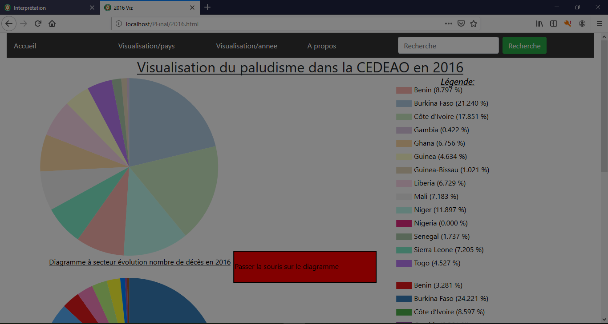
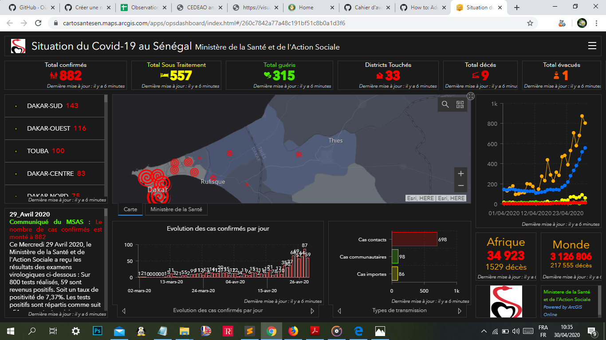

Vous trouverez en pièces jointes en cliquant sur les liens le rapport complet du travail ainsi que le cahier d'avancement wiki.
Constitué de deux étudiants en audit et contrôle de gestion et un étudiant en intelligence artificielle, le groupe n'a pas tardé à être crée car il s'agit d'étudiants qui ont l'habitude de travailler ensemble sur des projets.
Un de nos professeurs, M. Mansour DIOUF proposa à Yaye Salla, qui est la responsable, de faire si possible une étude sur le covid 19. Mais, comme notre étude devrait se porter dans l'espace CEDEAO et que la maladie venait juste de faire son entrée dans cette zone, nous nous sommes encore concertés et s'est dit pourquoi pas faire une étude sur le paludisme qui est la maladie qui tue le plus dans l'espace CEDEAO. Après accord, Abdoulaye Djibril Bâ s'est chargé de collecter les données dans le site UN Data qui est le site de l'Organisation des Nations Unis (ONU).
Nous nous sommes mis d'accord sur une plateforme comme suit:
Basé sur trois types d'études: étude par pays, étude par année et étude globale, les graphes proposés sont:
1: Pour l'étude par pays, un linechart et un barchart sont proposés
2: Pour l'étude par année, un diagramme circulaire a été proposé pour chaque année en fonction des pays. Il s'agit de deux cammemberts, un pour le nombre de cas et un pour le nombre de décès.
3: Pour l'étude globale, une visualisation sur carte a été proposée, si l'utilisateur passe la souris sur un pays, son nom, drapeau et population est affiché, s'il clique sur ce dernier, sa visualisation s'ouvre sur dans une nouvelle fenêtre.
Au terme de notre travail, le résultat obtenu est matérialisé pa la figure suivante

Une amélioration de la visualisation a été demandée par nos professeurs. Après concertation, nous avons décidé de changer complètement la visualisation en prenant cette fois ci comme modele de référence la visualisation sur le covid19 du ministère de la santé et de l'action sociale de la république du Sénégal.

Le résultat suivant a été observée